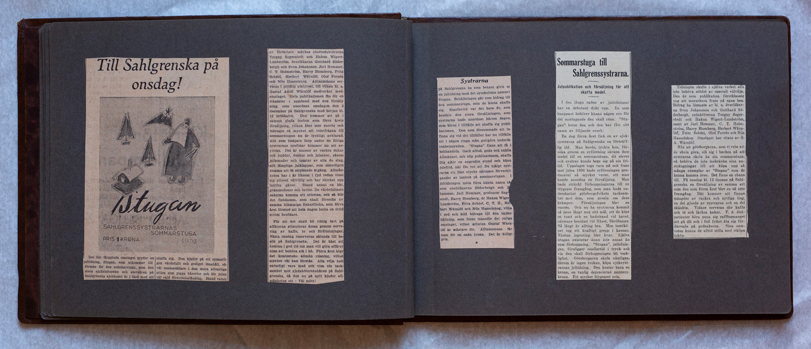

Uppslag 6
{kind=link}


Till Sahlgrenska på onsdag! Det här färgglada omslaget pryder en jultidning, Stugan, som utkommer till förmån för den sommarstuga, som den stora sjuksköterske- och elevkåren på Sahlgrenska sjukhuset är i färd med att skaffa sig. Den bjuder på ett synnerligen värdefullt och gediget innehåll, såväl tankeställare i den mera allvarliga stilen som pigga kåserier och för julen väl vald förströelse läsning. Bland raden av författare märkas chefredaktörerna Torgny Segerstedt och Hakon Wigert-Lundström, överläkarna Gotthard Söderbergh och Sven Johansson, Jarl Hemmer, C.T. Holmström, Harry Blomberg, Fritz Schéel, Herbert Wärnlöf, Olof Forsén och Nils Hasselskog. Alltsammans serveras i prydlig utstyrsel, till vilken bl. a. Gustaf Adolf Wärnlöf bidragit med omslaget. Hela publikationen fås för en riksdaler i samband med den försäljning, som anordnas onsdagen den 2 december på Sahlgrenska med början klockan 12 middagen. Den kommer att gå i samma glada tecken som förra årets försäljning, vilken blev stor succés och inbragte så mycket att tomtfrågan till sommarstugan nu är lyckligt avklarad. Allt som knåpats ihop under de flitiga systrarnas syaftnar kommer nu att avyttras. Det är massor av vackra dukar och kuddar, dockor och julsaker, såsom julbonader och tomtar av alla de slag, allt lämpliga julklappar, som säkerligen kamma att få strykande åtgång. Allmännheten har i år liksom i fjol redan visat sig ytterst välvillig och har skickat upp talrika gåvor. Bland annat en båt, grammofoner och tavlor. De värdefullaste sakerna komma att utlottas, och så blir det fiskdamm, som skall förestås av samma klämmiga fiskarflicka, som förra året förstod att hela dagen locka en strid ström av besökare. För att det skall bli riktig fart på affärerna stimuleras dessa genom servering av kaffe, te och förfriskningar. Nästa onsdag reserveras sålunda till besök på Sahlgrenska. Det är bäst att komma i god tid om man vill göra affärer utan att behöva stå i kö. Förra året blev det åtminstone allmänn rusning, vilket mycket väl kan förstås. Alla vilja helt naturligt vara med och visa sin tacksamhet mot sjuksköterskekåren på Sahlgrenska, då den nu på nytt bjuder allmännheten ett: Väl mött!
Systrarna på Sahlgrenska ha som bekant givit ut en jultidning med det symboliska namnet Stugan. Behållningen går som bidrag till den sommarstuga som de ämnar skaffa sig. Emellertid var det bara de, som besökte den stora försäljningen, som systrarna hade anordnat häromdagen, som blevo i tillfälle att skaffa sig publikationen. Den som försummade att infinna sig vid det tillfället har nu tillfälle att i någon ringa mån gottgöra underlåtenhetssynden. "Stugan" finns att få i bokhandeln. Gack alltså, goda och snälla Allmännhet, och köp publikationen, skaffa Dig själv en angenäm stund och känn julefrid, när Du vet att Du hjälpt systrarna ett litet stycke närmare förverkligandet av tanken på sommarstugan. I jultidningen möta flera kända namn så som chefläkarna Söderbergh och Johansson, Jarl Hemmer, professor Segerstedt, Harry Blomberg, dr. Hakon Wigert-Lundström, Fritz Schéel, C.T.H., Herbert Wärnlöf och Nils Hasselskog, vilka i ord och bild bidraga till den underhållning, som finns innanför det roliga omslaget, vilket artisten Gustaf wärnlöf är mästare för. Alltsammans får man för en enda krona. Det är billigt pris.
Sommarstuga till Sahlgrenssystrarna. Julpublikation och försäljning för att skaffa medel. I den långa raden av jultidningar har en debutant dykt upp. En som knappast behöver känna någon oro för det mottagande den skall röna. "Stugan" heter den och den har fått sitt namn av följande orsak: En dag förra året fick en av systrarna på Sahlgrenska en förträfflig idé. Man borde, tyckte hon, försöka genom en syförening skrapa ihop medel till en sommarstuga, dit elever och systrar kunde bege sig på sin fritid. Uppslaget togs vara på och fram mot julen 1930 hade syföreningen producerat så mycket varor, att man kunde anordna en försäljning. Man hade sträckt förväntningarna till en blygsam framgång, men man hade underskattat göteborgsfolkets tacksamhet mot dem, som pyssla om dess krämpor. Försäljningen blev en succés. Och nu ha systrarna kommit så långt mot sitt mål, att de köpt en tomt och en badstrand vid havet, närmare bestämt vid Näset, Säröbanan. Så långt är allting bra. Men tomtköpet tog ett kraftigt grepp i kassan. Nästan ingenting blev kvar. Själva stugan existerar ännu inte annat än som förhoppning. "Stugan", jultidningen föreligger emellertid i tryck och vid den skall förhoppningen bli verklighet. Göteborgarna skola nämligen, därom är ingen tvekan, köpa sjuksystrarnas jultidning. Den kostar bara en krona, en vanlig deprecierad papperskrona. Ett mycket blygsamt pris. Tidningen skulle i själva verket alls inte behöva stödet av speciell välvilja. Den är som publikation förstklassig nog att marschera fram på egna ben. Bidrag ha lämnats av bl.a. överläkarna Sven Johansson och Gotthard Söderbergh, redaktörerna Torgny Segerstedt och Hakon Wigert- Lundström samt av Jarl Hemmer, C.T. Holmström, Harry Blomberg, Herbert Wärnlöf, Fritz Schéel, Olof Forsén och Nils Hasselskog. Omslaget har ritats av G.A. Wärnlöf. När så göteborgarna, som vi veta att de skola göra, slå sig i backen på att systrarna skola ha sin sommarstuga, så behöva de inte inskränka sina anträngningar till att köpa upp så många exemplar av "Stugan" som de komma över. Det finns en chans till. På onsdag kl. 12 öppnas på Sahlgrenska en försäljning av samma art som den som förra året blev en så stor framgång. Där komma att finnas mängder av vackra och nyttiga ting, en del gjorde av systrarna och en del skänkta. Vidare serveras där kaffe och té och läckra kakor. F.d. dietpatienter böra unna sig raffinemanget att gå dit och i full frihet äta sig fördärvade på godsakerna. Sina samveten kunna de alltid stilla mad inköp.